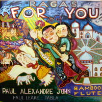

Music

Journey Over India
Released: 1994
Label: Flying Bird Music
Tracks
| Track | Title | Length |
| 1 | Bilawal (Morning Raga) | 21:38 |
| 2 | Assamese Folk Song | 2:26 |
| 3 | Song of Bengal | 5:46 |
| 4 | Noah's Song | 3:53 |
| 5 | Hindal (Spring Raga or Evening Raga) | 22:06 |
| 6 | Armenian Chant | 4:52 |
| 7 | Dhani | 7:15 |
| 8 | Bilawal Dhun | 4:55 |
Samples

Ragas For You
Released: 1996
Label: Flying Bird Music
Tracks
| Track | Title | Length |
| 1 | Raga Marwa - Vilambit Jhumra | 25:03 |
| 2 | Raga Marwa - Drut Teentaal | 13:29 |
| 3 | Hooghlie Ka Ghana | 7:25 |
| 4 | Raga Kalavati - Choutaal | 13:37 |
| 5 | Raga Deepavali - Drut Teentaal | 10:10 |
| 6 | Nepalese Folk Song | 3:24 |
Samples
Dusk Monsoon
Released: 2002
Label: Simla House
Tracks
| Track | Title | Length |
| 1 | Shree Raga - Vilambit in Jhumra Tal | 13:47 |
| 2 | Shree Raga - Drut Gat in Tin Tal | 12:45 |
| 3 | Raga Mian ki Malhar - Vilambit Ek Tal | 14:38 |
| 4 | Raga Mian ki Malhar - Drut Gatin Tin Tal | 14:17 |
| 5 | Nomadic Melody | 4:35 |